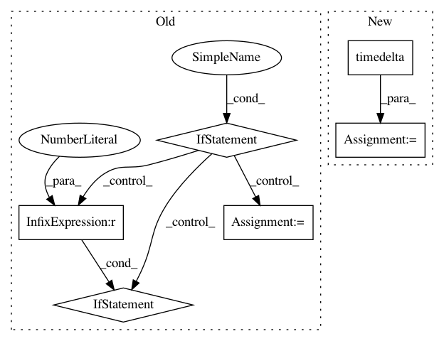

3d71f7f5e9f9bf4b0a390e601842ed8060209ed7,mozregression/cli.py,,get_default_date_range,#Any#,449
Before Change
Compute the default date range (first, last) to bisect.
last_date = datetime.date.today()
if fetch_config.app_name == "jsshell":
if fetch_config.os == "win" and fetch_config.bits == 64:
first_date = datetime.date(2014, 5, 27)
elif fetch_config.os == "linux" and "asan" in fetch_config.build_type:
first_date = datetime.date(2013, 9, 1)
else:
first_date = datetime.date(2012, 4, 18)
elif fetch_config.os == "win" and fetch_config.bits == 64:
// first firefox build date for win64 is 2010-05-28
first_date = datetime.date(2010, 5, 28)
else:
first_date = datetime.date(2009, 1, 1)
return first_date, last_date
class Configuration(object):
After Change
Compute the default date range (first, last) to bisect.
last_date = datetime.date.today()
first_date = datetime.date.today() - datetime.timedelta(days=365)
return first_date, last_date
In pattern: SUPERPATTERN
Frequency: 3
Non-data size: 6
Instances
Project Name: mozilla/mozregression
Commit Name: 3d71f7f5e9f9bf4b0a390e601842ed8060209ed7
Time: 2020-08-20
Author: wlachance@mozilla.com
File Name: mozregression/cli.py
Class Name:
Method Name: get_default_date_range
Project Name: eth-cscs/reframe
Commit Name: b42b39742cf6dffe0d3d555e056d276c960b8ac3
Time: 2020-01-27
Author: rafael.sarmiento@cscs.ch
File Name: reframe/core/fields.py
Class Name: TimerField
Method Name: __set__
Project Name: facebookresearch/ParlAI
Commit Name: d7ddc9ca7b7b62657b1e51c66b3f85da679d7b01
Time: 2020-06-12
Author: roller@fb.com
File Name: parlai/utils/misc.py
Class Name: TimeLogger
Method Name: log